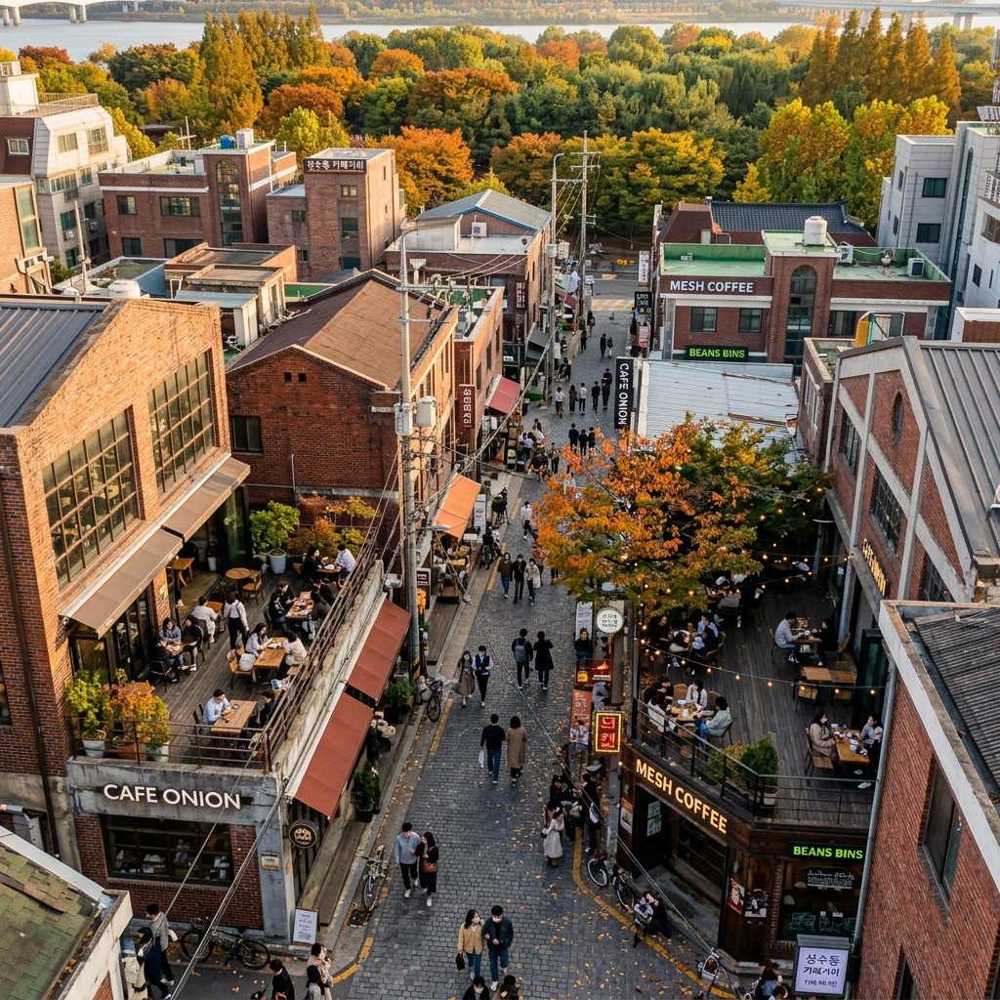
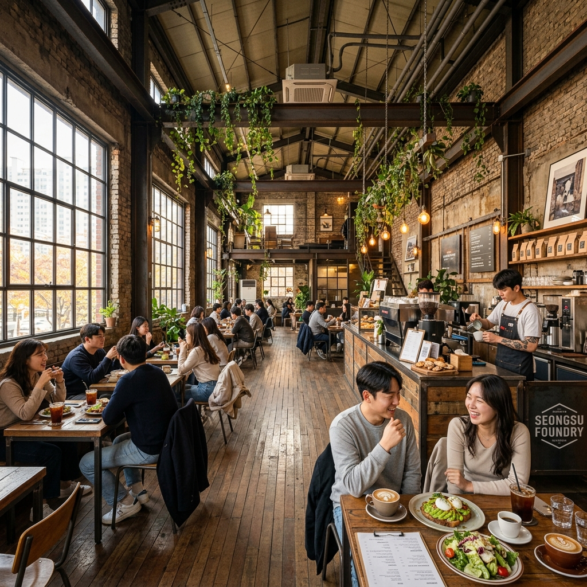
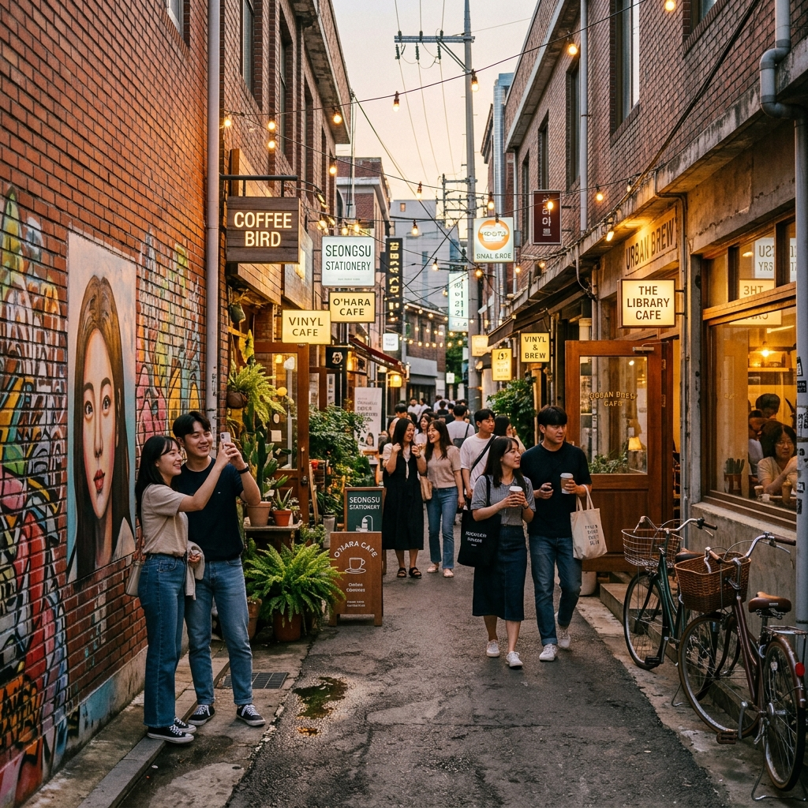

처음 성수동을 간 건 친구 따라간 것이었습니다.
"서울에서 가장 힙한 동네"라는 말이 솔직히 반신반의였습니다.
그런데 지하철 2호선 성수역 1번 출구를 나오자마자 뭔가 달랐습니다.
낡은 벽돌 건물에서 커피 냄새가 나고, 세련된 간판 하나 없는 카페 앞에 줄이 서 있었습니다.
그 낯선 조합이 성수동을 한 번에 설명해줬습니다. 구식과 신식이 묘하게 잘 어울리는 동네.

성수동 카페 거리 전경 — 붉은 벽돌 건물과 현대적 감각이 어우러진 서울의 핫플레이스
성수동의 변신을 이해하려면 이 동네의 과거를 알아야 합니다.
1960~70년대 성수동은 서울 수제화 생산의 70%를 담당하던 공업 지구였습니다.
수십 개의 소규모 공장과 정비소가 골목마다 빽빽이 들어찼고, 가죽 냄새와 재봉틀 소리가 동네를 채웠습니다.
그러다 1990년대 이후 생산 기지가 해외로 이전되면서 공장들이 하나씩 문을 닫았습니다.
높은 천장, 넓은 바닥, 두꺼운 벽돌 건물들이 빈 채로 방치됐습니다.
전환점은 2012년경 서울숲이 자리를 잡으면서 시작됩니다.
저렴한 임대료를 찾아 예술가와 디자이너, 소규모 카페 창업자들이 몰려들었습니다.
그들은 공장의 뼈대를 그대로 두고 내부에 카페와 갤러리를 꾸몄습니다.
그 결과 생겨난 것이 지금의 성수동 — 낡은 겉모습 안에 새로운 것이 살아 숨 쉬는 독특한 공간입니다.
2026년 현재 성수동은 국내외 여행자 모두가 찾는 서울의 대표 카페 거리입니다.
매주 주말 수만 명이 방문하며, 글로벌 럭셔리 브랜드들도 팝업 스토어를 이 동네에 엽니다.
무엇이 사람들을 계속 끌어당기는 걸까요. 저는 '진정성'이라는 단어가 가장 적합하다고 생각합니다.
새로 지은 번화가가 아니라 오래된 것 위에 새것을 얹어 두 시간이 공존하는 공간 — 그게 성수동입니다.
성수동 탐방의 시작점으로 저는 성수역보다 뚝섬역을 추천합니다.
왜냐면 뚝섬역에서 출발하면 덜 알려진 구역을 먼저 지나치면서 성수역 방향 연무장길을 목적지로 걷는, 자연스러운 동선이 만들어지기 때문입니다.
처음부터 유명한 곳으로 직행하는 것보다 이렇게 점점 분위기가 달아오르는 방식이 훨씬 여행의 온도가 높습니다.
추천 탐방 동선 (3~4시간 코스)
뚝섬역 1번 출구 → 뚝섬역 인근 신흥 카페 골목 구경 → 서울숲 공원 산책 (꽃사슴 방목지 포함) → 서울숲길 카페 브런치 → 연무장길 진입 → 어니언·대림창고 → 성수역 1번 출구 귀환
이 동선의 장점은 출발점(뚝섬역)과 도착점(성수역)이 지하철 한 정거장 차이이기 때문에, 걸어서 단방향 이동을 하면서 양쪽 역의 특색을 모두 경험할 수 있다는 점입니다.
반대 방향(성수역 → 뚝섬역)도 물론 가능합니다.
성수동을 처음 가는 분들이 헷갈리는 것이 '어디가 성수동의 메인 구역이냐'입니다.
크게 두 구역으로 나눌 수 있습니다. 연무장길과 서울숲길입니다.
연무장길은 성수역 1번 출구 기준 도보 2분 거리입니다.
좁은 골목에 카페와 편집샵이 촘촘하게 배치된 구역으로, 성수동을 대표하는 '미로 같은 골목 탐방'의 재미가 여기에 있습니다.
인파가 가장 많고 웨이팅도 가장 길지만, 성수동의 핵심을 경험하려면 반드시 지나야 합니다.
서울숲길은 서울숲 공원 인근을 따라 형성된 카페 거리입니다.
연무장길에 비해 훨씬 넓고 여유롭습니다.
가로수 길 옆으로 카페들이 늘어서 있고, 서울숲 공원과 바로 연결되어 있어 공원 산책과 카페 방문을 자연스럽게 결합할 수 있습니다.
저는 개인적으로 서울숲길의 여유로운 분위기가 더 좋았습니다.
연무장길의 압도적인 힙함보다는, 서울숲길의 조용한 세련됨이 성수동의 진짜 매력에 가깝다고 느꼈습니다.
| 카페명 | 웨이팅 | 추천 메뉴 | 한 줄 평 |
|---|---|---|---|
| 어니언 성수 | 30~60분 | 소금빵, 크루아상 | 철공소 개조 공간, 성수동의 아이콘 |
| 대림창고 | 15~30분 | 아메리카노 | 곡물 창고 → 카페, 10m 천장 압도적 |
| 할아버지공장 | 거의 없음 | 라떼 | 서울숲 방향, 좌석 넉넉하고 여유로움 |
| 성수연방 | 복합공간 | 팝업 브랜드 쇼핑 | 카페보다 팝업 스토어 허브로 변화 |
| 블루보틀 성수점 | 5~20분 | 드립 커피 | 외국인 관광객 비율 높음, 사진 명소 |
개인적으로 가장 인상 깊었던 곳은 어니언이 아니라 할아버지공장이었습니다.
유명 카페들과 달리 웨이팅이 거의 없었고, 오히려 공간의 규모와 분위기는 더 압도적이었습니다.
서울숲 방향에 있어 접근성이 조금 떨어지지만, 그 덕분에 관광객이 몰리지 않는 것이겠지요.
성수동에서 줄 서기가 싫다면, 유명 카페 한 곳을 포기하고 이런 2군(?) 카페를 선택하는 것을 강력히 추천합니다.

성수동 대형 베이커리 카페 내부 — 높은 층고와 노출 콘크리트가 만들어내는 압도적인 개방감
성수동은 커피만 마시는 동네가 아닙.
브런치 문화가 발달하여 에그 베네딕트, 팬케이크, 스무디볼 등 인스타그램용 식사를 즐길 수 있는 공간이 많습니다.
특히 성수동의 브런치 식당들은 '포토제닉'에 진심입니다. 그릇부터 테이블 세팅까지 사진 찍기 좋게 설계되어 있습니다.
리틀넥은 뉴욕 브루클린 감성의 레스토랑으로, 클램차우더와 브런치 플레이트가 특히 인기 있습니다.
가격대는 1인 15,000~22,000원 수준으로 성수동 치고 적절한 편입니다.
주말 점심에는 웨이팅이 길어지므로 평일 방문을 추천합니다.
LCDC서울은 전시와 카페, 식사가 결합된 복합 공간입니다.
아보카도 토스트, 에그 베네딕트 등 브런치 메뉴를 먹으면서 갤러리 전시도 함께 즐길 수 있습니다.
메뉴 가격이 좀 있지만(1인 16,000~22,000원), 공간 자체의 가치를 생각하면 납득이 됩니다.
먹거리 중 빠질 수 없는 것이 성수동 수제 아이스크림입니다.
골목 곳곳에 크림과 토핑을 직접 조합하는 커스텀 아이스크림 가게들이 있습니다.
특히 6~8월에는 줄이 가장 긴 업소 중 하나가 됩니다.
달콤하고 인스타그래머블한 아이스크림을 손에 들고 골목을 걷는 것이 성수동의 정석 코스 중 하나입니다.
성수동에서 가장 많이 듣는 불만이 "줄이 너무 길다"입니다.
주말 오후 2~5시에는 어니언·대림창고 앞에 30~60분씩 줄이 서는 게 일상입니다.
이를 피하는 방법이 있습니다.
방법 1: 카카오맵 원격 웨이팅 활용
집에서 출발하기 전, 카카오맵으로 목적지 카페의 원격 번호표를 미리 받아두세요.
지하철 안에서 번호표를 받으면 도착과 동시에 입장 가능합니다.
어니언, 대림창고 등 주요 카페가 카카오맵 원격 웨이팅을 운영합니다.
방법 2: 평일 오전 공략
평일 오전 9~11시는 웨이팅이 거의 없는 황금 시간대입니다.
재택근무자나 자유직 종사자라면 이 시간대를 노리세요.
성수동이 가장 한적하면서도 빛이 가장 예쁜 시간이기도 합니다.
방법 3: 비 오는 날 전략
성수동은 날씨에 민감한 상권입니다.
비 오는 날에는 인파가 크게 줄어 인기 카페도 빈자리가 생깁니다.
공장 건물의 빗소리, 오래된 창을 통해 보이는 빗길의 성수동 — 맑은 날과는 다른 감성이 있습니다.
2026년 성수동의 가장 두드러진 변화는 글로벌 브랜드 팝업 스토어의 폭발적 증가입니다.
명품 브랜드부터 국내 신진 디자이너까지, 팝업의 테스트 베드로 성수동이 선택되고 있습니다.
브랜드들이 성수동을 선택하는 이유는 명확합니다.
첫째, 2030 소비층의 집중도가 다른 어느 상권보다 높습니다.
둘째, SNS 확산력이 뛰어납니다. 성수동 방문자들은 자신의 경험을 인스타그램에 공유하는 비율이 높습니다.
셋째, 공간 자체의 개성 때문에 브랜드 이미지와의 시너지가 큽니다.
낡은 공장 건물을 배경으로 찍은 제품 사진은 스튜디오 사진보다 더 매력적인 경우가 많습니다.
팝업 정보는 인스타그램 #성수동팝업 해시태그에서 실시간으로 확인할 수 있습니다.
방문 전날 검색해보면 현재 어떤 팝업이 열려 있는지 파악할 수 있습니다.
단, 팝업은 예고 없이 일정이 변경되거나 조기 종료될 수 있으므로 방문 당일 다시 확인하는 것이 안전합니다.
성수동은 어디서 셔터를 눌러도 사진이 잘 나오는 동네입니다.
다만 '인생샷'을 원한다면 시간과 위치 선택이 중요합니다.
최적 촬영 시간대는 오전 9~10시(아침 햇살)와 오후 4~5시(황금빛 사이드 조명)입니다.
정오에는 강한 직사광선이 그림자를 깊게 만들어 역광과 과노출이 생깁니다.
황혼 무렵(오후 6~7시)에는 카페 조명이 켜지기 시작해 따뜻한 분위기의 야경을 담을 수 있습니다.
놓치면 아쉬운 포인트:
어니언 성수 내부 — 노출 콘크리트 벽과 창문 빛의 교차가 아름답습니다.
대림창고 외부 전경 — 맞은편 도로에서 건물 전체를 담으면 인스타그래머블한 사진이 나옵니다.
연무장길 골목 끝 — 골목 깊숙이 들어가서 골목 전경을 담으면 성수동의 분위기가 압축됩니다.
서울숲 꽃사슴 방목지 — 사슴과 함께 연두빛 배경의 사진은 성수동 특유의 특별함을 살려줍니다.

성수동 시그니처 디저트 — 시각과 미각을 동시에 사로잡는 성수동만의 예술적 베이커리
성수동 방문에는 대중교통이 압도적으로 편합니다.
지하철 2호선 성수역(연무장길 접근) 또는 뚝섬역이 가장 가깝습니다.
분당선 서울숲역(1번 출구)은 서울숲 구역 접근 시 이용합니다.
자가용 방문 시 가장 많이 이용하는 것은 서울숲 공영주차장입니다.
최초 1시간 무료 이후 10분당 200원이 부과됩니다.
주말에는 오전 10시 이전에 도착하지 않으면 만차가 되는 경우가 많습니다.
성수동 연무장길 인근 도로의 불법 주정차는 상시 단속 중이므로, 잠깐이라도 길가에 차를 세우는 건 금물입니다.
따릉이(공공자전거)를 적극 활용하는 것도 추천합니다.
성수역·서울숲 인근 따릉이 대여소에서 자전거를 빌려 골목을 누비면 도보보다 훨씬 넓은 범위를 탐방할 수 있습니다.
대여 요금은 1시간 1,000원으로 매우 저렴합니다.
성수동 내부는 차량 통행이 많지 않아 자전거 타기에 비교적 안전한 편입니다.
봄(3~5월): 서울숲 벚꽃·이팝나무 + 카페 야외 테라스 조합이 최고.
인파가 연중 최고치를 기록하므로 평일 방문 필수.
여름(6~8월): 수제 아이스크림과 빙수 시즌.
무더위에도 뚝섬 한강공원과 연계하면 수박처럼 시원한 하루를 보낼 수 있습니다.
가을(9~11월): 사진작가들이 가장 좋아하는 계절.
서울숲 단풍과 공장 벽돌의 질감, 가을 햇살의 조합이 최고의 구도를 만들어냅니다.
겨울(12~2월): 크리스마스 팝업이 가장 화려해지는 시즌.
추위를 이유로 주저하지 마세요. 조용한 겨울 골목의 성수동은 오히려 더 감성적입니다.